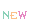
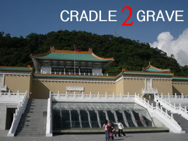

更新履歴
2025/10/12
Civ6についての雑文を書いたのでリンクを張りました。こっちのサイトもリニューアルしたいなぁ（2回目）
リンク回りを整備
メインメニュー
ワイルドアームズ（無印）
概要
ストーリー攻略
（製作途中）
ミニゲーム・イベントデータ
豆知識
隠し要素
裏技・バグ技
「海歩きバグ」検証
盗める・落とす重要アイテムリスト
ステータス成長表
ロディ
ザック
セシリア
グラフによる比較
戦闘研究
ロディ
ザック
セシリア
魔法研究
LUCK系オリジナルコマンド研究
ガーディアン関連研究
Sorcerous Stabber ORPHEN
魔術士オーフェン
（DLB/C2G共通）
概要
ストーリー攻略
ボス攻略
戦闘指南
隠し要素＆小ネタ
敵データベース
各種プロレスゲーム
（21CPB/C2G共通）
エキサイティングプロレス5
シーズンモード攻略
（製作途中）
技捜索用リスト
技変更ガイド
その他一般ゲーム
Dance Dance Revolutionシリーズ
DDR用語集
曲名

譜面・テクニック・基本用語・その他
首都高バトル0
攻略・裏技・データ
BLACK/MAtrIXシリーズ
B/M2武器熟練度考察
B/MOO自動系スキル修得考察
エクストリームレーシングSSX
攻略メモ
（製作途中）
FF5
必要AP量一覧表（SFC/GBA両対応）
Civilization Revolution
四方山メモ
Civilization 6
「英雄と伝説」モード-考察
Among Us
2024年のAmong Us 考

OTHERS CONTENTS
インフォメーション
コラム
ゆうやみポータル